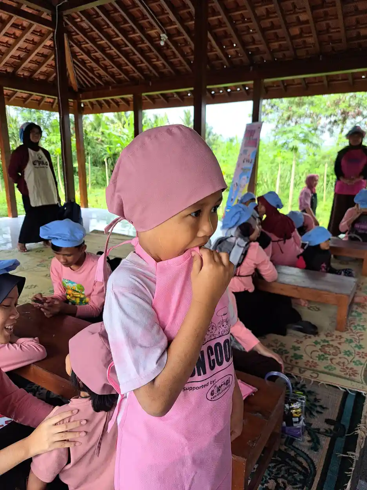
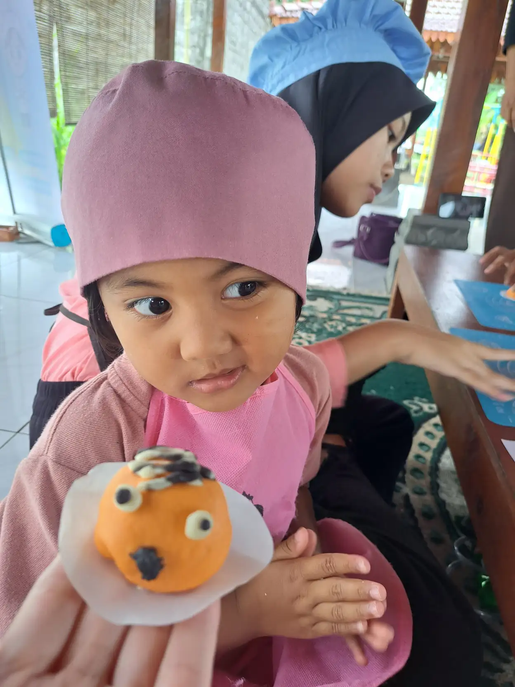
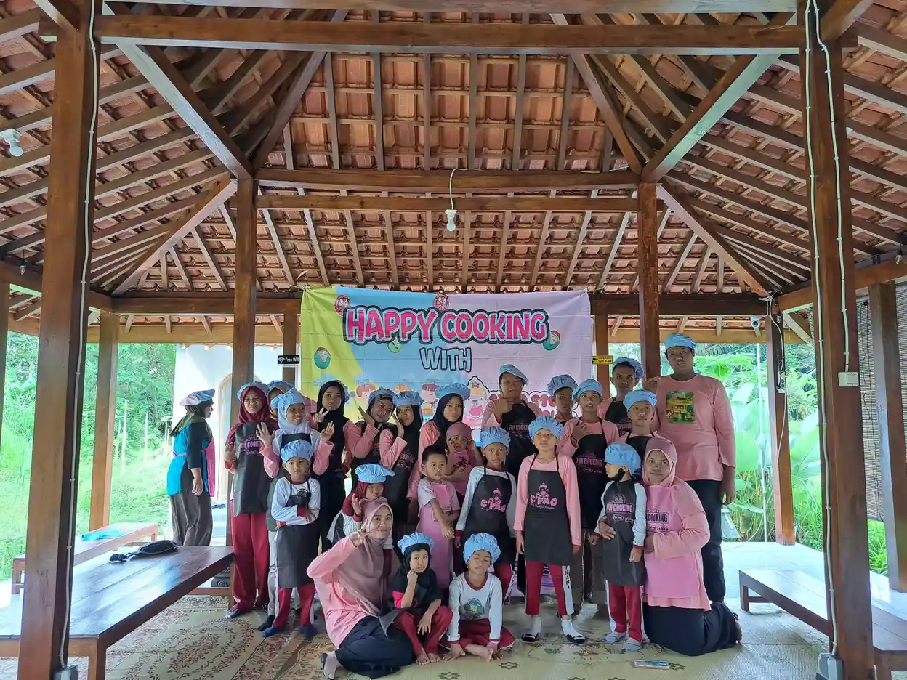

Setiap anak berkebutuhan khusus memiliki potensi untuk berkembang dan mencapai kemandirian. Keyakinan ini menjadi fondasi bagi berbagai program pemberdayaan yang dikembangkan oleh yayasan sosial anak berkebutuhan khusus di seluruh Indonesia. Pemberdayaan bukan sekadar memberikan bantuan, melainkan membekali anak dengan kemampuan dan keterampilan yang akan mereka gunakan sepanjang hayat.
Artikel ini akan membahas secara komprehensif tentang berbagai program pemberdayaan untuk anak berkebutuhan khusus, mulai dari intervensi dini, pendidikan formal dan non-formal, pelatihan keterampilan hidup, hingga persiapan memasuki dunia kerja. Dengan memahami rangkaian program ini, orang tua dan pendidik dapat merancang jalur pemberdayaan yang optimal sesuai kebutuhan dan potensi setiap anak.
Daftar Isi
- 1. Filosofi Pemberdayaan Anak Berkebutuhan Khusus
- 2. Program Intervensi Dini (0-6 Tahun)
- 3. Program Pendidikan (6-18 Tahun)
- 4. Program Keterampilan Hidup (Life Skills)
- 5. Program Pelatihan Vokasional
- 6. Program Transisi ke Dunia Kerja
- 7. Pendampingan ABK Dewasa
- 8. Peran Keluarga dalam Pemberdayaan
- 9. Implementasi Program di YUKA
Filosofi Pemberdayaan Anak Berkebutuhan Khusus
Pemberdayaan anak berkebutuhan khusus didasarkan pada beberapa prinsip fundamental yang harus dipahami oleh semua pemangku kepentingan:
Prinsip Kemampuan, Bukan Keterbatasan
Paradigma modern dalam pendampingan ABK telah bergeser dari fokus pada keterbatasan (disability) menuju fokus pada kemampuan (ability). Setiap anak, terlepas dari kondisinya, memiliki potensi yang dapat dikembangkan. Tugas pendidik dan pendamping adalah menemukan dan mengoptimalkan potensi tersebut, bukan terpaku pada apa yang tidak bisa dilakukan anak.
Prinsip Individualisasi
Tidak ada dua anak berkebutuhan khusus yang sama persis. Bahkan anak dengan diagnosis yang sama dapat memiliki kebutuhan, kekuatan, dan tantangan yang berbeda. Oleh karena itu, program pemberdayaan yang efektif harus disesuaikan secara individual (individualized program).
Prinsip Holistik
Pemberdayaan yang efektif harus menyentuh semua aspek perkembangan anak: kognitif, motorik, sosial-emosional, komunikasi, dan kemandirian. Fokus pada satu aspek saja tidak akan menghasilkan outcome yang optimal.
Prinsip Keberlanjutan
Pemberdayaan bukan proses yang berhenti pada titik tertentu. Ini adalah perjalanan sepanjang hayat yang memerlukan kontinuitas program dan dukungan. Transisi antar tahap kehidupan harus dipersiapkan dengan baik.
"Setiap anak memiliki hadiah istimewa yang menunggu untuk dibuka. Tugas kita adalah menemukan kunci yang tepat untuk membuka hadiah tersebut." - Filosofi pendidikan inklusi

Program Intervensi Dini (0-6 Tahun)
Intervensi dini adalah salah satu faktor terpenting dalam menentukan outcome jangka panjang anak berkebutuhan khusus. Penelitian menunjukkan bahwa otak anak pada usia dini memiliki plastisitas yang sangat tinggi, sehingga intervensi pada tahap ini dapat memberikan dampak yang signifikan.
Mengapa Intervensi Dini Penting?
- Plastisitas otak: Otak anak di bawah 6 tahun sangat mudah dibentuk dan diprogram ulang
- Mencegah kesenjangan: Semakin cepat intervensi, semakin kecil kesenjangan dengan anak seusianya
- Membangun fondasi: Keterampilan dasar yang dipelajari dini akan menjadi fondasi untuk pembelajaran selanjutnya
- Mendukung keluarga: Orang tua mendapat dukungan dan edukasi sejak awal
Jenis Program Intervensi Dini
1. Stimulasi Perkembangan
Program untuk merangsang perkembangan motorik, kognitif, bahasa, dan sosial melalui aktivitas bermain yang terstruktur. Cocok untuk semua jenis kebutuhan khusus.
2. Terapi Wicara Dini
Untuk anak dengan keterlambatan bicara atau gangguan komunikasi. Semakin dini dimulai, semakin besar kemungkinan anak dapat berkomunikasi dengan baik.
3. Terapi Okupasi
Fokus pada pengembangan motorik halus, koordinasi, dan keterampilan sehari-hari yang sesuai usia.
4. Applied Behavior Analysis (ABA) untuk Anak Autis
Metode berbasis bukti untuk anak dengan autisme yang sangat efektif jika dimulai sebelum usia 3 tahun.
5. Program Pendidikan Orang Tua
Pelatihan untuk orang tua agar dapat melanjutkan stimulasi di rumah secara konsisten.
Tanda-tanda yang Memerlukan Intervensi Dini
- Tidak merespons nama pada usia 12 bulan
- Tidak menunjuk atau melambai pada usia 12 bulan
- Tidak mengucapkan kata bermakna pada usia 16 bulan
- Tidak menggabungkan dua kata pada usia 24 bulan
- Kehilangan keterampilan bahasa atau sosial pada usia berapa pun
- Tidak mencapai milestone motorik sesuai usia
Program Pendidikan (6-18 Tahun)
Setelah melewati tahap intervensi dini, anak berkebutuhan khusus memasuki usia sekolah. Ada beberapa opsi pendidikan yang tersedia:
1. Sekolah Inklusi
Anak belajar bersama dengan anak reguler di sekolah umum, dengan dukungan guru pendamping khusus (GPK) atau shadow teacher. Model ini ideal untuk anak dengan kebutuhan khusus ringan hingga sedang yang dapat mengikuti kurikulum reguler dengan modifikasi.
Keunggulan:
- Interaksi dengan teman sebaya reguler mengembangkan keterampilan sosial
- Ekspektasi akademik yang lebih tinggi
- Persiapan untuk hidup di masyarakat inklusif
2. Sekolah Luar Biasa (SLB)
Sekolah khusus untuk anak berkebutuhan khusus dengan kurikulum yang disesuaikan. Cocok untuk anak dengan kebutuhan khusus sedang hingga berat yang memerlukan pendekatan pembelajaran yang sangat spesifik.
Keunggulan:
- Rasio guru-murid kecil
- Kurikulum sangat adaptif
- Tenaga pendidik yang spesialis
3. Homeschooling Terstruktur
Pendidikan berbasis rumah dengan kurikulum yang disusun sesuai kebutuhan anak. Banyak yayasan sosial ABK yang menyediakan program ini dengan dukungan guru kunjung dan ijazah kesetaraan.
Keunggulan:
- Sangat personal dan fleksibel
- Lingkungan belajar yang familiar
- Dapat disesuaikan dengan ritme anak
4. Program Kesetaraan (Paket A, B, C)
Pendidikan non-formal yang ijazahnya setara dengan SD, SMP, dan SMA. Program ini memberikan fleksibilitas waktu dan metode pembelajaran.

Program Keterampilan Hidup (Life Skills)
Salah satu tujuan utama pemberdayaan anak berkebutuhan khusus adalah mencapai kemandirian dalam kehidupan sehari-hari. Program keterampilan hidup (life skills) melatih anak untuk dapat melakukan aktivitas dasar secara mandiri.
Keterampilan Perawatan Diri (Self-Care Skills)
- Kebersihan diri: Mandi, sikat gigi, cuci tangan, ke toilet
- Berpakaian: Memakai dan melepas pakaian, menyimpan pakaian
- Makan: Makan sendiri, menggunakan alat makan, menyiapkan makanan sederhana
- Perawatan kesehatan: Mengenali sakit, meminum obat, mengurus luka ringan
Keterampilan Domestik (Domestic Skills)
- Memasak: Menyiapkan makanan sederhana, menggunakan peralatan dapur dengan aman
- Kebersihan rumah: Menyapu, mengepel, mencuci piring, mencuci pakaian
- Organisasi: Merapikan kamar, menyimpan barang pada tempatnya
- Keamanan rumah: Mengunci pintu, mengenali bahaya, prosedur darurat
Keterampilan Komunitas (Community Skills)
- Transportasi: Naik angkutan umum, membaca peta, navigasi
- Belanja: Membeli barang, menghitung kembalian, mengenali harga
- Interaksi sosial: Menyapa, meminta bantuan, mengikuti aturan sosial
- Keamanan: Mengenali orang asing, situasi berbahaya, meminta pertolongan
Keterampilan Pengelolaan Waktu dan Uang
- Membaca jam dan kalender
- Mengikuti jadwal harian
- Menghitung uang dan memberikan kembalian
- Menabung dan memahami konsep hemat
Kisah Sukses: Pembelajaran Memasak di YUKA
Di YUKA, program memasak bukan sekadar mengajarkan resep, tetapi melatih berbagai keterampilan sekaligus: membaca instruksi, mengukur bahan (matematika), koordinasi motorik, keamanan dapur, dan yang terpenting - kebanggaan menyajikan hasil karya sendiri. Banyak alumni yang kini mampu membantu memasak di rumah atau bahkan memiliki usaha kuliner sederhana.

Program Pelatihan Vokasional
Program vokasional bertujuan membekali anak berkebutuhan khusus dengan keterampilan kerja yang dapat digunakan untuk mencari nafkah atau setidaknya berkontribusi pada aktivitas produktif. Pelatihan vokasional biasanya dimulai pada usia remaja (15-18 tahun) dan dapat berlanjut hingga dewasa.
Jenis Keterampilan Vokasional yang Umum Diajarkan
1. Kerajinan Tangan (Handicraft)
Membuat kerajinan dari berbagai bahan: anyaman, rajutan, bordiran, sablon, pembuatan lilin aromaterapi, keramik, dll. Cocok untuk anak dengan keterampilan motorik halus yang baik.
2. Kuliner dan Food Processing
Memasak, membuat kue, mengolah makanan kemasan (telur asin, keripik, sambal), barista. Sangat populer karena pasar yang luas.
3. Pertanian dan Perkebunan
Urban farming, hidroponik, tanaman hias, budidaya jamur. Cocok untuk anak yang menyukai aktivitas outdoor.
4. Perawatan dan Kebersihan
Laundry, housekeeping, car wash, perawatan taman. Keterampilan yang selalu dibutuhkan di berbagai tempat kerja.
5. Administrasi Sederhana
Filing, data entry, scanning dokumen, packing. Untuk anak dengan kemampuan kognitif yang cukup baik.
6. Seni dan Desain
Melukis, desain grafis sederhana, fotografi. Untuk anak dengan bakat seni yang menonjol.
Prinsip Pelatihan Vokasional yang Efektif
- Berbasis minat dan kemampuan: Pilih keterampilan yang sesuai dengan minat dan kekuatan anak
- Task analysis: Pecah tugas kompleks menjadi langkah-langkah kecil yang dapat dipelajari satu per satu
- Repetisi dan konsistensi: Latihan berulang untuk membangun kebiasaan dan keterampilan
- Situasi nyata: Praktik di lingkungan kerja sesungguhnya, bukan hanya simulasi
- Orientasi pasar: Pilih keterampilan yang memiliki permintaan di pasar
Program Transisi ke Dunia Kerja
Transisi dari sekolah ke dunia kerja adalah salah satu fase paling menantang bagi anak berkebutuhan khusus dan keluarganya. Program transisi yang baik harus dipersiapkan jauh-jauh hari, idealnya dimulai 2-3 tahun sebelum anak lulus dari program pendidikan.
Komponen Program Transisi
1. Assessment Kesiapan Kerja
Evaluasi menyeluruh tentang keterampilan, minat, dan kebutuhan dukungan anak untuk menentukan jalur karir yang sesuai.
2. Program Magang (Internship)
Pengalaman kerja nyata di tempat kerja sesungguhnya dengan pendampingan. Ini membantu anak belajar tentang kultur kerja, mengikuti instruksi atasan, berinteraksi dengan rekan kerja, dan membangun kepercayaan diri.
3. Job Coaching
Pendampingan intensif di tempat kerja oleh job coach yang membantu anak beradaptasi dengan tugas dan lingkungan kerja. Pendampingan ini biasanya dikurangi secara bertahap seiring meningkatnya kemandirian anak.
4. Supported Employment
Model pekerjaan di mana ABK bekerja di tempat kerja reguler dengan dukungan berkelanjutan sesuai kebutuhan. Ini berbeda dengan sheltered workshop di mana ABK bekerja di lingkungan terpisah.
5. Sheltered Workshop
Tempat kerja yang dirancang khusus untuk ABK dengan supervisi dan dukungan penuh. Cocok untuk ABK dengan kebutuhan dukungan tinggi yang belum siap untuk competitive employment.
6. Kewirausahaan
Membantu ABK membangun usaha sendiri atau bekerja dalam bisnis keluarga. Ini memberikan fleksibilitas dan kontrol lebih besar atas lingkungan kerja.
Kisah Sukses: Ilham, Hafidz Qur'an dan Wirausaha Mandiri
Ilham adalah salah satu alumni YUKA yang membuktikan bahwa anak berkebutuhan khusus dapat mencapai prestasi luar biasa. Dengan pendampingan yang sabar dan konsisten, Ilham berhasil menghafal 30 juz Al-Qur'an. Kini ia telah mandiri dan memiliki usaha produksi telur asin sendiri. Kisah Ilham menginspirasi banyak keluarga dan membuktikan bahwa tidak ada batasan untuk apa yang bisa dicapai dengan dukungan yang tepat.

Pendampingan ABK Dewasa
Pemberdayaan tidak berhenti ketika anak berkebutuhan khusus mencapai usia dewasa. Banyak ABK dewasa yang tetap memerlukan dukungan dalam berbagai aspek kehidupan, meskipun dengan intensitas yang bervariasi.
Kebutuhan ABK Dewasa
- Tempat tinggal: Apakah akan tinggal dengan keluarga, di rumah mandiri dengan dukungan, atau di residential care?
- Pekerjaan: Keberlanjutan pekerjaan dan dukungan di tempat kerja
- Kesehatan: Akses ke layanan kesehatan yang memahami kebutuhan ABK
- Kehidupan sosial: Kesempatan untuk berinteraksi dan membangun hubungan
- Perlindungan hukum: Pengampuan (guardianship) dan perlindungan dari eksploitasi
Perencanaan Masa Depan
Salah satu kekhawatiran terbesar orang tua ABK adalah "Siapa yang akan merawat anak saya ketika saya sudah tidak ada?" Perencanaan masa depan yang komprehensif mencakup:
- Perencanaan keuangan (trust fund, asuransi, dll.)
- Penunjukan wali atau pengampu
- Rencana tempat tinggal jangka panjang
- Jaringan dukungan komunitas
- Dokumen legal yang diperlukan
Peran Keluarga dalam Pemberdayaan
Keluarga adalah komponen terpenting dalam keberhasilan program pemberdayaan anak berkebutuhan khusus. Tanpa dukungan aktif dari keluarga, program apapun akan sulit berhasil optimal.
Peran Orang Tua
- Partner dalam pembelajaran: Melanjutkan stimulasi dan latihan di rumah
- Advokat: Memperjuangkan hak dan kebutuhan anak
- Pembuat keputusan: Menentukan program dan layanan yang sesuai
- Model: Mencontohkan sikap positif dan penerimaan
- Fasilitator kemandirian: Memberikan kesempatan anak untuk mandiri
Peran Saudara Kandung
- Teman bermain dan belajar
- Model perilaku sosial
- Pendukung di masa depan
Tantangan yang Dihadapi Keluarga
Mendampingi anak berkebutuhan khusus bukan perjalanan yang mudah. Keluarga seringkali menghadapi:
- Beban finansial untuk terapi dan pendidikan
- Kelelahan fisik dan emosional
- Stigma dari masyarakat
- Dampak pada kehidupan pernikahan dan saudara kandung
- Ketidakpastian tentang masa depan
Oleh karena itu, dukungan untuk keluarga juga merupakan bagian penting dari program pemberdayaan. Support group, konseling keluarga, dan respite care (layanan penitipan sementara) dapat membantu keluarga tetap kuat dalam perjalanan panjang ini.
Implementasi Program di YUKA
Yayasan Ukhuwah Kaffah Amanatullah (YUKA) mengimplementasikan berbagai program pemberdayaan untuk anak berkebutuhan khusus dengan pendekatan yang holistik dan berbasis nilai-nilai Islam.
Program Pendidikan: Sekolah Inklusi Taruna Imani
YUKA menyelenggarakan Sekolah Inklusi Taruna Imani yang memberikan pendidikan dengan kurikulum adaptif. Dengan rasio guru-murid yang ideal dan pendekatan personal, setiap anak mendapat perhatian sesuai kebutuhannya.
Program Tahfidz Al-Qur'an
Program hafalan Al-Qur'an dengan metode yang disesuaikan untuk ABK. Program ini tidak hanya mengembangkan aspek spiritual, tetapi juga melatih konsentrasi, memori, dan disiplin.
Program Keterampilan Hidup
Pelatihan keterampilan sehari-hari yang terintegrasi dalam kurikulum, termasuk memasak, kebersihan, dan keterampilan sosial.
Program Pemberdayaan Ekonomi
Persiapan kemandirian ekonomi melalui pelatihan keterampilan produktif seperti pembuatan makanan olahan, kerajinan, dan lainnya.
Program Dukungan Keluarga
Parenting class, support group, dan konsultasi untuk membantu keluarga dalam mendampingi anak.
Hubungi YUKA
Alamat: Jl. Kronggahan Raya II, RT 04 RW 07, Trihanggo, Gamping, Sleman (Utara RSA UGM)
Telepon/WhatsApp: +62 812-2991-2332
Kunjungi halaman Tentang Kami untuk informasi lebih lengkap.
Kesimpulan
Pemberdayaan anak berkebutuhan khusus adalah perjalanan panjang yang memerlukan kesabaran, konsistensi, dan dukungan dari berbagai pihak. Dari intervensi dini hingga pendampingan di usia dewasa, setiap tahap memerlukan program yang terencana dan disesuaikan dengan kebutuhan individu anak.
Yang terpenting, pemberdayaan harus dilandasi oleh keyakinan bahwa setiap anak berkebutuhan khusus memiliki potensi untuk berkembang dan berkontribusi. Dengan dukungan yang tepat dari keluarga, sekolah, yayasan sosial, dan masyarakat, anak-anak istimewa ini dapat mencapai kemandirian dan kualitas hidup yang bermakna.
Jika Anda ingin mengetahui lebih lanjut tentang program pemberdayaan untuk anak berkebutuhan khusus atau ingin berkontribusi, hubungi kami atau berdonasi sekarang untuk membantu anak-anak istimewa meraih potensi terbaiknya.
"Sebaik-baik manusia adalah yang paling bermanfaat bagi manusia lainnya." - HR. Ahmad, Thabrani, Daruqutni